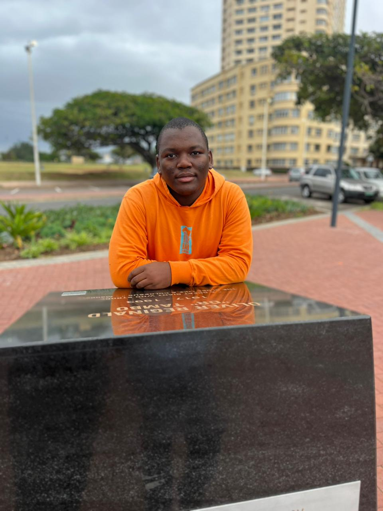

Curriculum Vitae
Andile Aphelele Khanyile
Final-year BINCT Student | Software Development | ICT Support | Web & Mobile Projects
Career Objective
To grow within the technology industry by gaining practical experience, continuously upskilling, and contributing to useful digital solutions. I aim to develop into a stronger ICT professional with solid software development, technical support, collaboration, and problem-solving abilities.
Education
Durban University of Technology
Currently completing final year.
Asande Senior Secondary School
Project Experience
Web-based student wellness platform designed to support DUT student wellness services through a simple web interface.
- Worked mainly on backend development using Python and Flask.
- Assisted with system functionality and final solution presentation.
Mobile application built as an academic group project to support community volunteering through a user-friendly mobile experience.
- Contributed to mobile application development and project implementation.
- Collaborated with team members to complete project tasks.
Certifications
- Linux Unhatched - Cisco Networking Academy
- Introduction to IoT and Digital Transformation - Cisco Networking Academy, completed 07 April 2026
- Introduction to Data Science - Cisco Networking Academy, completed 22 April 2026
- Discovering Entrepreneurship - Cisco Networking Academy, completed 10 May 2026
References
Available on request.